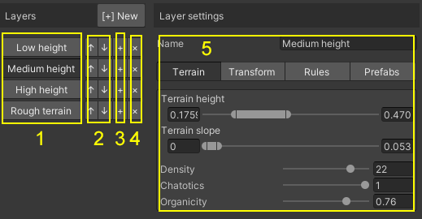
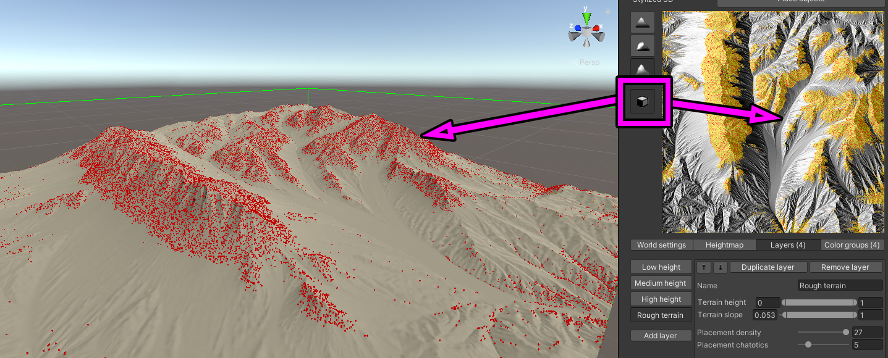
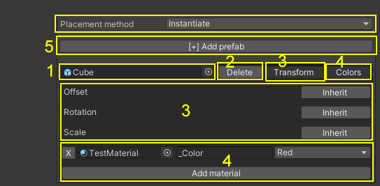
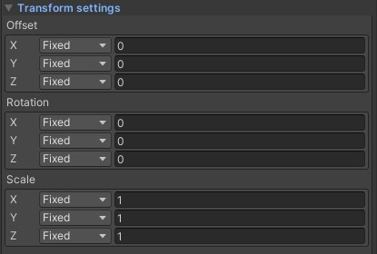
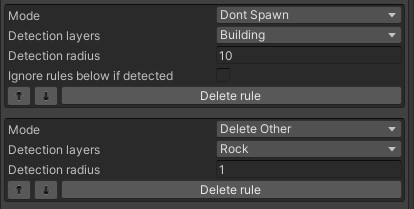

Spawn layers
Operating principle
- The system instantiates prefabs after you hit the Place objects button.
- Prefabs are divided into layers.
- In the layers, you can specify the height and slope range between which you want to create objects.
- We can determine how densely we want to place these objects and how chaotically we want to place them.
- You can add an unlimited number of objects to a layer, they will be randomly selected when placed.
- Placement is based on topography and collision rules.
- We can determine the dimensions, direction of rotation and offset of objects. This can be done at the layer and object level as well.
- These transformations can be performed in a fixed way or within a random range for each parameter.
- If a color group has been assigned to a layer object, the color is applied after placement. More info
Overview

- #1: Here you select your created ones.The selected layer's preview can be seen on the top of the window, and its settings in the right side (#5)The selected layer's position preview only showen if the Object Preview button is pressed 
- #2: You can reorder your layers with this arrow buttons
- #3: You can duplicate the selected layer with its all settings
- #4: You can delete your layer. Be careful with this button!
- #5: This is your layer's settings. More information below.
Basic parameters

- Name: The name of the prefab layer. This can be anything.
- Terrain height: In wich height range we want to spawn objects
- Terrain slope: In wich steepness range we want to spawn objects
- Density: This number represents how many objects we want to instantiate.
- Chaotics: This number represents the chaos level between points. The bigger the value, the more chaotic the results.
- Organicity: This number represents how organic your placement going to be.
Objects

- Placement method: Here you can select from two modes:
- Instantiate: This is the old one, when the objects is just instantiated without prefab connection. (recommended)
- Prefab: This is the new one, when the objects created with prefab connection.(colorization options is disabled)
- #5: Here you can add more prefabs to the selected layer
- #1: Here you can select a Prefab GameObject what you want to assign to this layer
- #2: Here you can delete this object from the current layer
- #3: With the per-object transform you can manipulate the prefab's offset, rotation, and scaleregardless of the main layer transform settings
- #4: Here you can select a Material that gonna be colored with the selected color group if its can be found in your prefab, and the color parameter of the material's Shader given correctly. You can add multiple Material to the selected object with independent color groups if you want to.
Transformations

- Here you can set the layer's objects offset, rotation, and scale.
- You can choose from 4 options for each axis:
- Fixed: A fixed value
- Random: A random number between a given range. This value changes on every spawn!
- Copy X/Y/Z: With this you can copy the value of the given axis. This can be handy if you want to fix a random value.e.g.: for a tree you should add a random range to the Y axis, and to the X axis, and copy the X axis value to the Z axis to prevent distorted tree trunk
Collision rules

- Here you can add collision rules to prevent colliding objects
- You can choose from 2 options for each rule:
- Dont spawn: If a collision detected, the object not gonna be spawned (recommended)
- Delete other: If a collision detected, the OTHER OBJECT WILL BE DESTROYED! This is really not recommended!
- You can select layers that you NOT want to collide with
- you can specify a distance within which collisions will be detected.The collision detection performed with a Spherecast regardless of the shape of your objects!